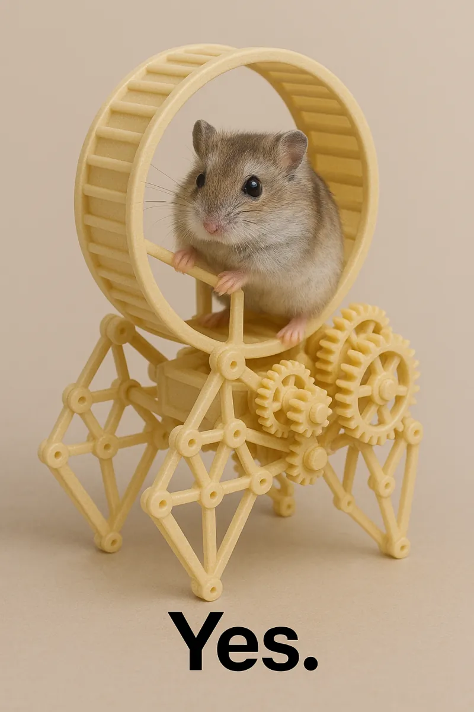
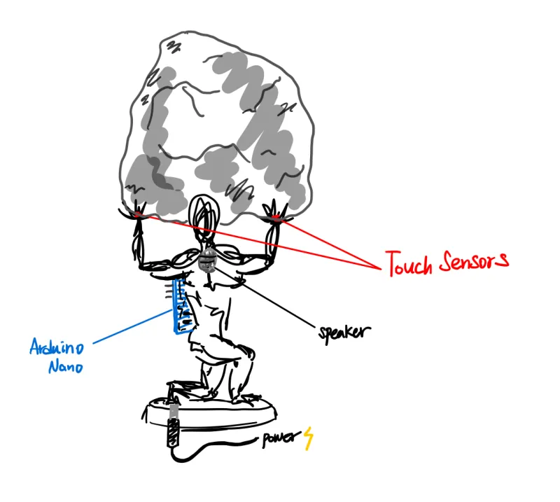
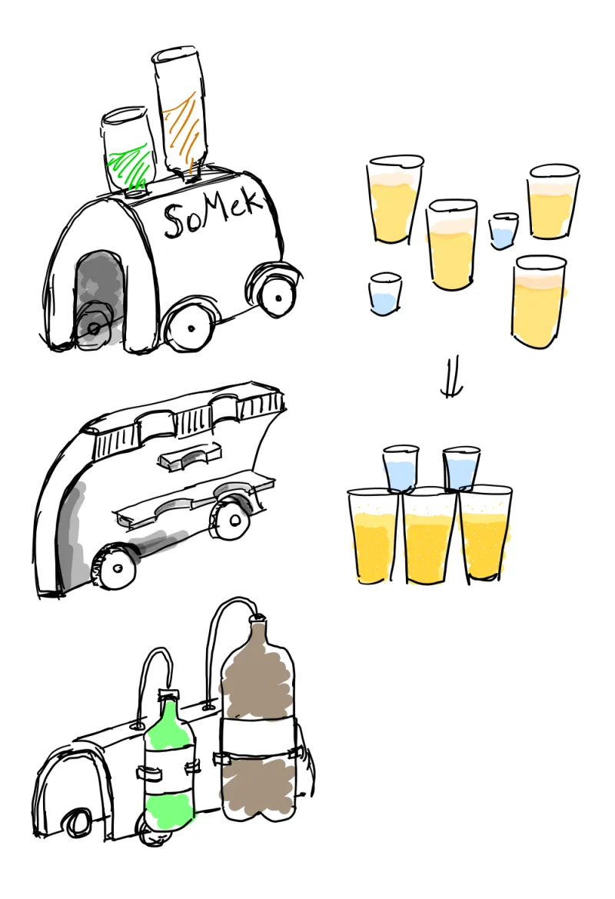
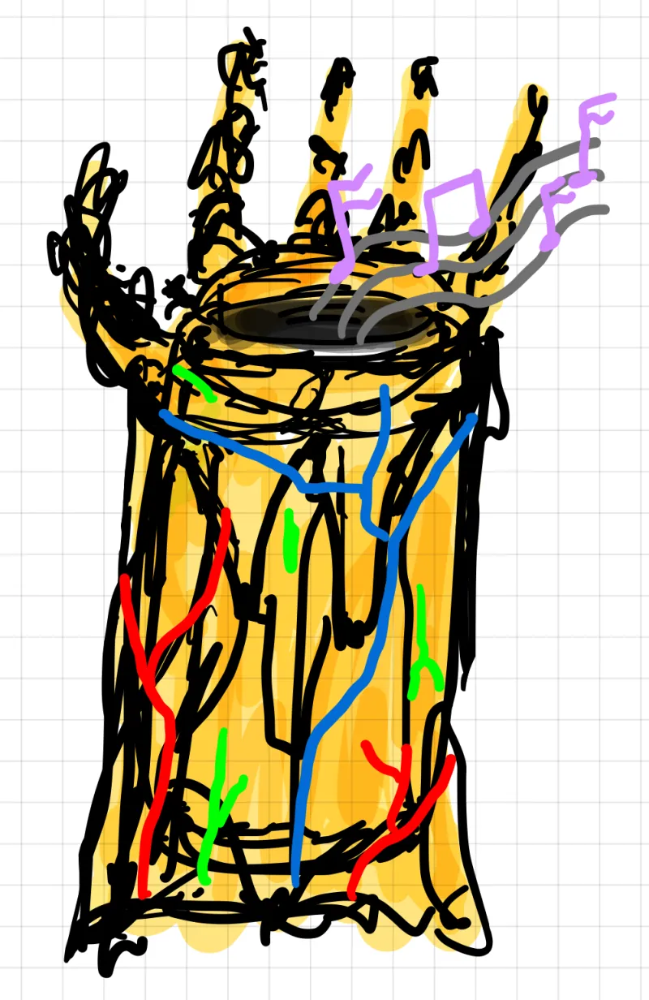
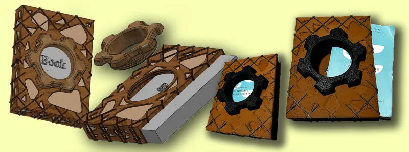

Robotics Projects
17 PROJECTSSimon
Autonomous driving in the forest. Through fusion of 2D and 3D perception and proprioceptive sensors, wheeled robots will effectively and efficiently navigate through heavily vegetated environments.

Patrick
Autonomous environmental monitoring robot for forested areas using LiDAR, camera sensor fusion, and adaptive density drive.
Proprioceptive Traversal
Robotic navigation where instead of treating all obstacles as untraversable, their cost are estimated for an initial path. Upon collision, the cost of the obstacle is updated and the path is recomputed.

Return of the Jediode
An all-inclusive, immersive Star Wars project that takes users from building the lightsaber, choosing a crystal, to duel practice against Darth Vader.

E-Ducati-On
E-Ducati-On is an educational robotics platform designed to teach students about robotics, programming, and controls.
Mobot
Traditional CMU line tracing robot competition entry with autonomous navigation and precision control systems.
Hydrone
Underwater drone project built during CMU's Build 18 competition for recreational, environmental, and safety applications.

T-Bone: Fish Tail Inspired Robot
Biomimetic underwater robot inspired by fish tail propulsion, designed for efficient aquatic locomotion and maneuverability.

ComputerVision Solution for Automated Power Plant Inspection
Robotics and AI solution automating power plant gauge inspections with object detection, image analysis, and OCR.

Wisconsin Robotics RoboMaster
Competitive robotics team competing in RoboMaster, focusing on autonomous navigation and precision targeting systems.

Torsobot
Self-balancing rimless wheel robot investigating fundamental properties of human walk cycle with enhanced stability using PID control.

Powder Spreader
Powder bed fusion manufacturing system created for ML analysis on powder spread conditions and quality control.

Cheap Opensource Robot Dog (CORD)
Open-source quadruped robot platform designed for educational purposes and affordable robotics research.

Laika
Laika is a quadruped robot like SPOT that is being built from scratch as part of Roboclub.

WYBot
Versatile robotic platform designed for multiple applications, featuring modular design and adaptive control systems.

HOWL
Advanced robotic system designed for autonomous exploration and navigation in challenging environments.

Pestroleum / Petmobility
An innovative concept combining pest management with renewable energy generation.
Software Projects
3 PROJECTS
Learning with Moldex
Collaborated with Dr. Jinsu Gim and Dr. Chung-Yin Lin on materials research for the manufacturing of thermoplastic composite structures.

Learning for Powder Bed Fusion
Supervised learning on powder spread and repose angle images to determine the quality of metal powder spread.

Unity Based Infantry Army Training Simulation
An immersive digital simulation of the Nonsan Training Ground, featuring a detailed landscape and comprehensive training exercises.
Free Build Projects
2 PROJECTS
Recycled Newspaper Mache Canoe
I love camping. I love Canoeing. And I love Fishing. I also had prior experience building a canoe from recycled materials (AZSZ 1.0). So why not build another?

Recycled Arizona "Can"oe
When Covid hit and classes moved online, my friends and I started drinking Arizona (a lot of it). We collected around 80 cans in a matter of a few weeks.
3D Printing Projects
4 PROJECTS
Sisyphus - Desktop Study Mate
Inspired by Sisyphus, the Greek mythological king condemned to an eternal struggle, this desktop object serves as both a toy and a motivational tool.

Somek Tower Builder
This machine sets up a 'Domino Drop Shot' where shot glasses get knocked over in a chain reaction.

Infinity Gauntlet - JBL Speaker Cover
Gauntlet shaped JBL speaker cover that uses the colorful lights from the JBL Pulse 4 to mimic the infinity gems, serving as both a replica and a night lamp.

Book Case
Book case to protect books from damage during transportation, with a screw to support different book thicknesses.